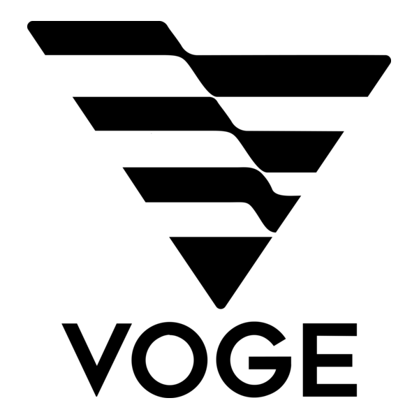

VOGE
VOGE je prémiová motocyklová značka patriaca pod čínsku priemyselnú spoločnosť LONCIN, ktorá bola založená v roku 1993. Samotná značka VOGE vznikla v roku 2018 s cieľom ponúknuť moderné motocykle s kvalitným spracovaním, pokročilými technológiami a atraktívnym pomerom ceny a výbavy.
Za značkou stojí veľká výrobná fabrika LONCIN, ktorá má dlhoročné skúsenosti s výrobou motocyklov, motorov a komponentov pre svetových výrobcov. Významnou súčasťou jej histórie je aj spolupráca s BMW Motorrad.
Čím je značka známa?
- Silné výrobné a technologické zázemie spoločnosti LONCIN.
- Spolupráca s renomovanými svetovými výrobcami.
- Moderné cestovné, adventure, športové a mestské motocykle.
- Atraktívny pomer ceny, výbavy a výkonu.